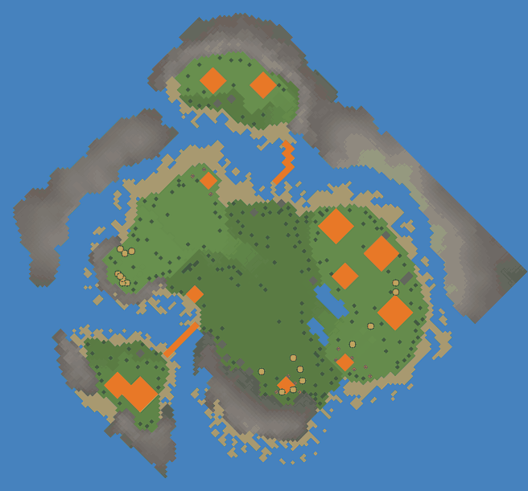

Game data v31 · build 255Sources & research notes
Challenges › Ranked · batch 06.1, 9 of 27 · released 23 Oct 2024 · an older challenge, still playable from the archive but no longer in the rotation
As always at this time of year, towns from the less fertile parts of the Outlands are eager to secure special pumpkins for the Spooky season. The more fertile towns rush their harvests to make sure everyone has a share.
Map

- 1Bakery (2 places)
- 2Chicken Coop
- 3Bridge ×9
- 4Two-Story House
- 5Windmill (3 places)
- 6Zen Garden
- 7Bridge ×7
- 8Foragers' Hut (2 places)
- 9Chicken Coop, Open Kitchen (build site)
- Water
- Sand
- Soil
- Mountain
- Trees
- Fruit trees
- Rocks
- Buildings
- Build sites
- Villagers
Our own drawing from the level file: one patch of colour per map square, seen flat from above and turned to face the same way as the game’s camera at the start (the game also tilts the view, and turning the camera rotates it). Lighter ground is higher. Decorations are left out. Numbers mark the buildings already placed.
Starting conditions
- Villagers
- 15 adults, 3 kids
- Workplaces
- Windmill ×3, Bakery ×2, Chicken Coop ×2, Foragers' Hut ×2, Open Kitchen
- Homes
- Two-Story House
- Roads & decoration
- Bridge ×16, Zen Garden
- Stockpile
- Bread ×33, Clay, Fruit ×33, Book ×19, Flour ×18, Egg ×12 plus 22 loose piles whose contents are set when the map loads
- Tools
- Shovel ×3, Hammer, Book, Scythe, Pick
- Wild trees
- Dead Tree ×204, Apple Tree ×13, Pine Tree ×4
- Map resources
- Rock sources ×13 (for a Quarry)
Counted from the map file, leaving out 96 scenery objects (signs, birds, statues, story props). Stockpile numbers are items placed on the map and can differ slightly from what the stockpile shows. Wild tree counts are what the map starts with; trees spread and get felled from there.
Main objectives
Optional objectives
None.
Objectives are worded as the game shows them: the level’s own objective text where it has one, otherwise the game’s standard objective lines.
Strategy
No strategy yet. Finished it? Share yours.
Villager needs
| Need | Active on this map | What can meet it here |
|---|---|---|
| Food | Yes | Bread, Fruit, Stew, Veggie |
| Housing | Yes | — |
| Community | Yes | Beer, Communal Plaza, Open Kitchen |
| Fun | Yes | Beer, Playground |
| Heat | No | — |
| Wellness | Yes | Smoothie, Zen Garden |
| Cooling | No | — |
| Hydration / thirst | No | — |
Available buildings & plants
28 buildings and plants can be built on this map from the start. Anything unlocked during play is not included.
Buildings, structures & decorations
Fields & plants
Starting objects & resources
Show 47 starting object types
| Object | Count |
|---|---|
| Rock Source | 13 |
| Dead Tree | 204 |
| PineTree | 4 |
| AppleTree | 13 |
| Canoe | 2 |
| Expedition Crate 1 | 2 |
| Expedition Crate 2 | 6 |
| Expedition Crate 3 | 6 |
| Pallet | 1 |
| Canoe Crashed | 1 |
| Sand snails | 15 |
| Reef | 9 |
| 2-1 BrokenWickerbread | 1 |
| 2-1 Dock | 1 |
| Halloween Candle 1 | 24 |
| Halloween Candle 0 | 13 |
| Halloween Fence | 4 |
| Tool Shovel | 1 |
| Tool Hammer | 1 |
| Tool Book open | 1 |
| Tool Scythe | 1 |
| Tool Pick | 1 |
| Canoe Paddle | 1 |
| Tool Shovel planted | 2 |
| Halloween Tombstone | 21 |
| Column | 4 |
| Bread | 33 |
| Clay | 1 |
| Fruit | 33 |
| Book | 19 |
| Windmill | 3 |
| Bakery | 2 |
| Chicken Coop | 2 |
| Foragers' Hut | 2 |
| BakeryPeel | 2 |
| Bridge | 16 |
| Two-Story House | 1 |
| Zen Garden | 1 |
| Halloween Event | 1 |
| Fireflies Event | 3 |
| Birds flock Crow | 1 |
| Villager Adult | 15 |
| Villager Kid | 3 |
| Open Kitchen | 1 |
| StandalonePile | 22 |
| Flour | 18 |
| Egg | 12 |